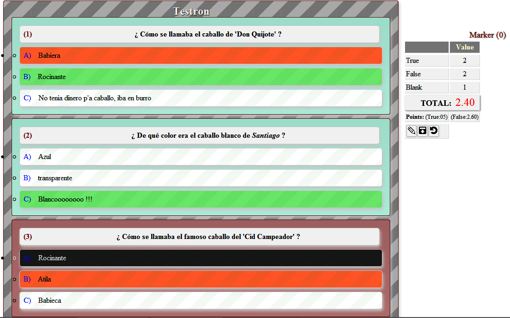
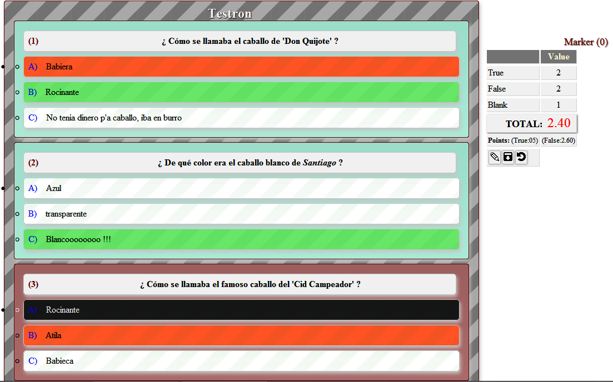

'Testron' (API JS) - Javascript app for questions of 'test' type.
Author: Juan José Guerra Haba - dinertron@gmail.com - 2016 May
License: Free BSD. & Open GPL v.3. Keep credit, please.
Versión: 1.0.0 BETA
File: testron.js Main Class: testron.Test.js
TESTRON
 It is a Javascript API to perform questions of test type.

It is a Javascript API to perform questions of test type.

DESCRIPTION
This can be used as a preparatory method for academic exams. You only need the question file with a valid structure. This file can be JSON format (object or string) or Javascript Object with one declared variable.
This rigid structure may contain configuration parameters (the conf property) where specify eg the UI containers in which are embed questions and the Marker with information and buttons, or if allowed to select multiple answers or only one, the charset to use, etc.
This namespace relies heavily on the utility functions of an internal object implemented in the same file, the 'util' object, which contains methods and objects statics, they could be used outside the same it, using its 'classpath'.
It also contains the class Test, Test.Marker, Test.Question and Tests.Question.Answer, but is more comfortable to use one unique method (parseTestrons), which will does all job automaticly:var tests = testron.parseTestrons (test, conf);Here test represent a questions-battery
FEATURES
- Fully OOP
- Customizable by CSS
- Cross-browser
- MVC Philosophy
- HTML5 and CSS3.
- Reduction to minimum code to use by the user.
USAGE
The testron library can be used in several ways:
- By a pure Javascript object which respects the necessary structure for the question-test (see STRUCTURE TEST).
- Through a JSON object
- With a pure string with JSON format.
- Or by the classical form: With its constructor. (less advisable)
Eg:
var tests1 = new testron.Test(objTestJSON,
{container: "containerUI",
markerContainer: "containerMarker"});Or: (PREFERABLY)
var tests = testron.parseTestron(objTestronJSON,
{container: "containerUI",
markerContainer: "containerMarker"});then events can be used to perform actions conditioned by their listeners:
testron.onClick(function(answer, marker){
alert("CLICK: " + answer.parent.num +
"[" + answer.name + "] ). " + marker.score);
contMarker.style.visibility = "hidden";
});
testron.onFinished(function(test){
alert("FINISHED TEST: " + test.id);
contMarker.style.visibility = "visible";
});Of course you must be loaded before the script in the HTML header. (header secction)
<script type="text/javascript" src="testron.js"></script>
Public API
- Constructor
testron.Test (test-questions object); - Getters
getTests (); addTest (test-questions object); removeTest (test-questions object); resetTests (); - OTHERS METHODS
parseTestrons (tests-questions object); toJSON (); - INNER OBJECTS
- util
toPrecision (floatNumber, precision); toDecimals (floatNumber, precision); toDigits (num, digits, sign); icos [icons object] addEvent (elem, eventType, handler); ... some listeners ...
- util
- EVENTS
onOk (function listenerOk (answer, marker) { ... }); onFail (function listenerFail (answer, marker) { ... }); onClick (function listenerClick (answer, marker) { ... }); onNext (function listenerNext (question, marker) { ... }); onMarker (function listenerUpdateMarker (marker) { ... }); onFinished (function listenerFinished (tests) { ... });
STRUCTURE for the 'question-test' object
This structure is rigid and must be as follows eg:
{
testron: [
{
conf: {className: "test-80", container: "container1",
markerContainer: "container2", stopOnSuccess: true,
digits: 2, precision: 2},
questions: [
{
conf: {num: 1, solution: 2, txt: "Question 1 ???"},
answers: [
{name: "A", txt: "Answer A"},
{name: "B", txt: "Answer B"},
{name: "C", txt: "Answer C"}
]
},
{
conf: {num: 2, solution: 3, txt: "Question 2 ???"},
answers: [
{name: "A", txt: "Answer A"},
{name: "B", txt: "Answer B"},
{name: "C", txt: "Answer C"}
]
},
{
conf: {num: 3, solution: 3, txt: "Question 3 ???"},
answers: [
{name: "A", txt: "Answer A"},
{name: "B", txt: "Answer B"},
{name: "C", txt: "Answer C"}
]
},
{
conf: {num: 4, solution: 1, txt: "Question 4 ???"},
answers: [
{name: "A", txt: "Answer A"},
{name: "B", txt: "Answer B"},
{name: "C", txt: "Answer C"}
]
} // END QUESTION
] // END QUESTIONS
} // END TEST
//, ... OTHERs TESTS
] // END TESTS
}CONFIGURATION
This options for configuration may be included in conf property, these are:
- className : {string} if you wish a specific class name for container
- container : {string} the id DOM element which embed the UI
- markerContainer : {string} equal for Marker (It advised in fixed position)
- remove : {boolean} cleans the container before insert the content
- markerRemove : {boolean} equal for Marker container
- stopOnSuccess : {boolean} allows to select multiple answers until find the correct
- digits : {number} digits to show in Marker
- precision : {number} accuracy of results
Authoring
Created and developed entirely by Juan Jose Guerra Haba. <dinertron@gmail.com>
Copyright 2016 © GuerraTron
License GPL v3
Developing & Tools
Created with Nodeclipse
(Eclipse Marketplace, site)
Nodeclipse is free open-source project that grows with your contributions.
Debug by Firefox + Firebug
Additional editing and cleaning with Notepad++
I hope It can be useful to someone as it has been for me. In this case it would be appreciated email commenting use or suggestions for future improvements.
¡ PLEASE, KEEP CREDITS AND LINKS, THANKS !
... and as George Lucas would say: may the force be with you!
{kind=link}